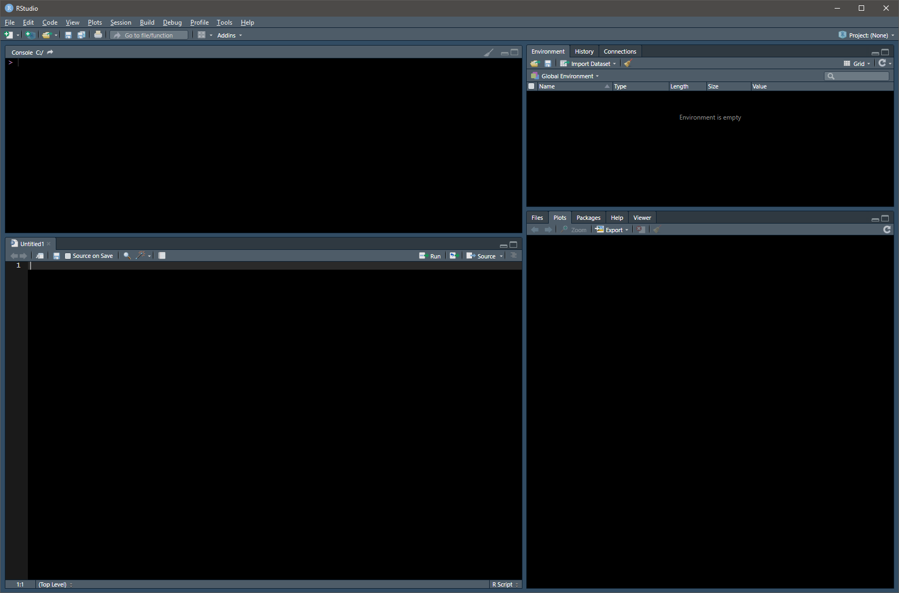
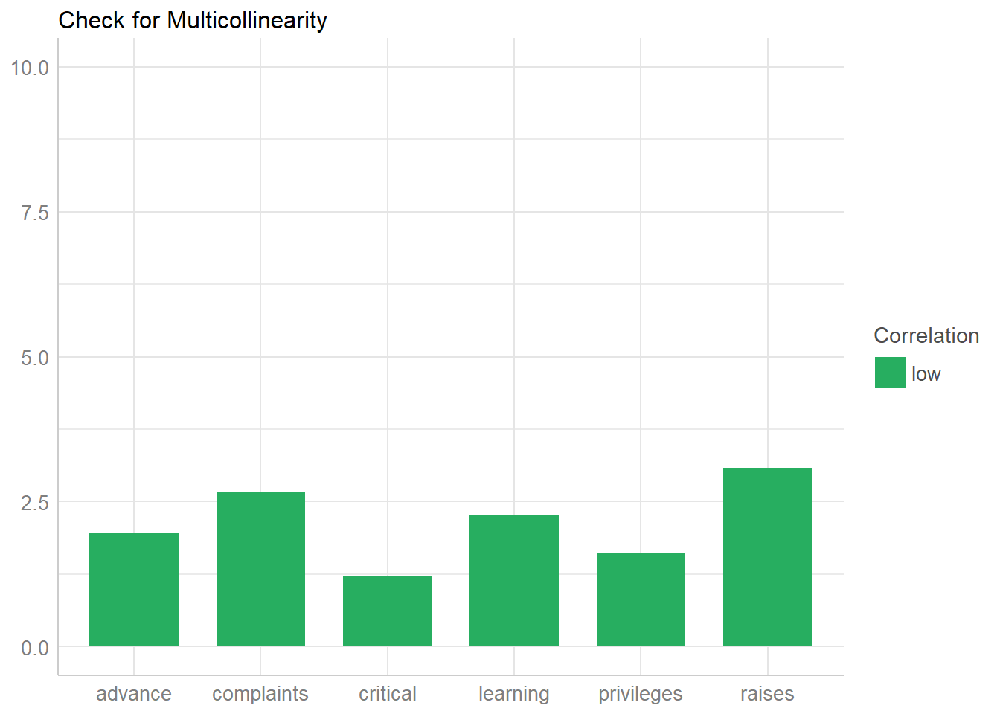
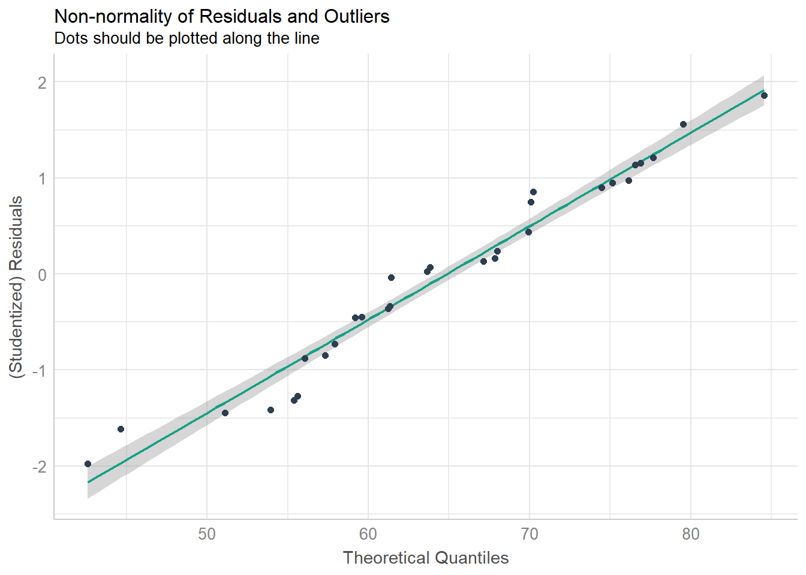
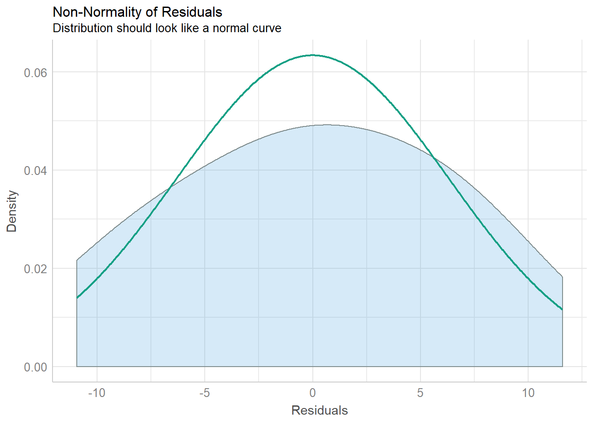
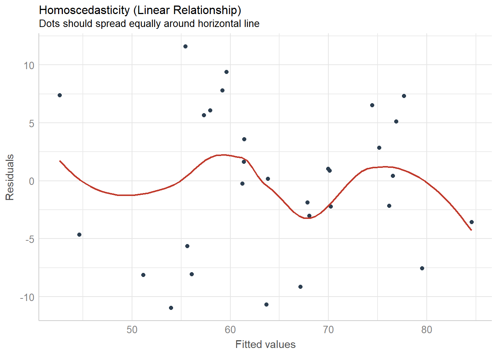
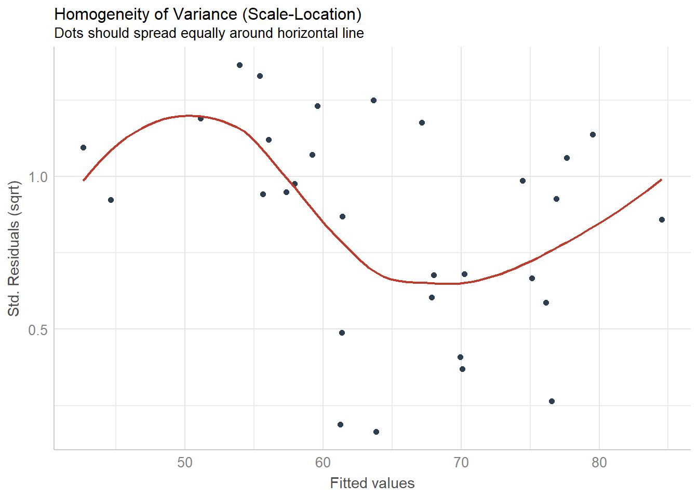
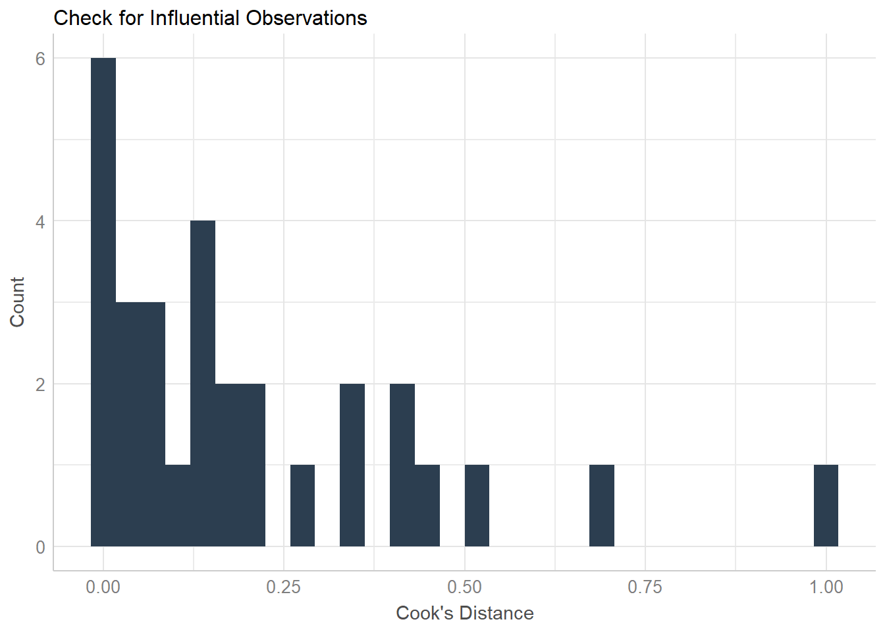

Update R by installing new versions using the process described above or by using the handy installr package.
installr::updateR()setwd("C:/Research/R")getwd()install.packages("tidyverse")library(parallel)library(tidyverse) since doing loads ggplot2, tibble, tidyr, readr, purrr, dplyr, stringr, and forcats.If you only need a single command from a given package, use a double colon to call it; in some cases, this can prevent conflicts in the command namespace.
df_stata = haven::read_dta("Stata File.dta")R can read virtually any tabular data file (and is rapidly improving its database capabilities).
library(readr)
df_csv = read_csv("Comma Separated Values.csv")
library(haven)
df_stata = read_dta("Stata File.dta")
df_sas = read_sas("SAS File.sas7bdat")
df_spss = read_spss("SPSS File.sav")
library(readxl)
df_excel = read_excel("Excel Spreadsheet.xlsx")The package “dplyr,” included in the tidyverse, includes several verbs that ease data munging:
library(dplyr)
df_example %>% select() # Subset columns.
df_example %>% filter() # Subset rows.
df_example %>% arrange() # Sort/order by columns.
df_example %>% mutate() # Create new variables/columns.
df_example %>% group_by() # Groups data by variable.
df_example %>% summarize() # Reduce multiple values to a single value.The arduous process of data tidying falls outside the scope of a cheat sheet, but learning how to combine the above verbs with the powerful pipe operator will make your life significantly easier.
tibble::glimpse(attitude) # Glimpse at the data; often better than head() or str().## Observations: 30
## Variables: 7
## $ rating <dbl> 43, 63, 71, 61, 81, 43, 58, 71, 72, 67, 64, 67, 69, 68, ...
## $ complaints <dbl> 51, 64, 70, 63, 78, 55, 67, 75, 82, 61, 53, 60, 62, 83, ...
## $ privileges <dbl> 30, 51, 68, 45, 56, 49, 42, 50, 72, 45, 53, 47, 57, 83, ...
## $ learning <dbl> 39, 54, 69, 47, 66, 44, 56, 55, 67, 47, 58, 39, 42, 45, ...
## $ raises <dbl> 61, 63, 76, 54, 71, 54, 66, 70, 71, 62, 58, 59, 55, 59, ...
## $ critical <dbl> 92, 73, 86, 84, 83, 49, 68, 66, 83, 80, 67, 74, 63, 77, ...
## $ advance <dbl> 45, 47, 48, 35, 47, 34, 35, 41, 31, 41, 34, 41, 25, 35, ...cor.test(~ rating + complaints, data = attitude)##
## Pearson's product-moment correlation
##
## data: rating and complaints
## t = 7.737, df = 28, p-value = 1.988e-08
## alternative hypothesis: true correlation is not equal to 0
## 95 percent confidence interval:
## 0.6620128 0.9139139
## sample estimates:
## cor
## 0.8254176The easystats project’s correlation package, while not on CRAN, is the best at examining multiple correlations at once.
# devtools::install_github("easystats/correlation")
correlation::correlation(attitude)## # A tibble: 21 x 9
## Parameter1 Parameter2 r t df p CI_low CI_high Method
## <chr> <chr> <dbl> <dbl> <int> <dbl> <dbl> <dbl> <chr>
## 1 rating complaints 0.825 7.74 28 0.000000417 0.662 0.914 Pearson
## 2 rating privileges 0.426 2.49 28 0.189 0.0778 0.682 Pearson
## 3 rating learning 0.624 4.22 28 0.00416 0.340 0.803 Pearson
## 4 rating raises 0.590 3.87 28 0.00957 0.292 0.784 Pearson
## 5 rating critical 0.156 0.838 28 1 -0.216 0.489 Pearson
## 6 rating advance 0.155 0.831 28 1 -0.217 0.488 Pearson
## 7 complaints privileges 0.558 3.56 28 0.0188 0.248 0.765 Pearson
## 8 complaints learning 0.597 3.94 28 0.00850 0.301 0.788 Pearson
## 9 complaints raises 0.669 4.77 28 0.00105 0.407 0.829 Pearson
## 10 complaints critical 0.188 1.01 28 1 -0.185 0.513 Pearson
## # ... with 11 more rowsols_model = lm(dv ~ iv1 + iv2 + iv3, data = df_goes_here)
summary(ols_model)Use a period if you want every variable (except the dependent variable specified) to be used as a covariate.
ols_model = lm(rating ~ ., data = attitude)
summary(ols_model)##
## Call:
## lm(formula = rating ~ ., data = attitude)
##
## Residuals:
## Min 1Q Median 3Q Max
## -10.9418 -4.3555 0.3158 5.5425 11.5990
##
## Coefficients:
## Estimate Std. Error t value Pr(>|t|)
## (Intercept) 10.78708 11.58926 0.931 0.361634
## complaints 0.61319 0.16098 3.809 0.000903 ***
## privileges -0.07305 0.13572 -0.538 0.595594
## learning 0.32033 0.16852 1.901 0.069925 .
## raises 0.08173 0.22148 0.369 0.715480
## critical 0.03838 0.14700 0.261 0.796334
## advance -0.21706 0.17821 -1.218 0.235577
## ---
## Signif. codes: 0 '***' 0.001 '**' 0.01 '*' 0.05 '.' 0.1 ' ' 1
##
## Residual standard error: 7.068 on 23 degrees of freedom
## Multiple R-squared: 0.7326, Adjusted R-squared: 0.6628
## F-statistic: 10.5 on 6 and 23 DF, p-value: 1.24e-05The performance package, also part of the easystats project, includes several easy commands to check OLS model assumptions.
library(performance)
check_collinearity(ols_model)## # A tibble: 6 x 3
## Parameter VIF SE_factor
## <chr> <dbl> <dbl>
## 1 complaints 2.67 1.63
## 2 privileges 1.60 1.27
## 3 learning 2.27 1.51
## 4 raises 3.08 1.75
## 5 critical 1.23 1.11
## 6 advance 1.95 1.40check_normality(ols_model)## OK: Residuals appear as normally distributed (p = 0.383).check_heteroscedasticity(ols_model)## OK: Error variance appears to be homoscedastic (p = 0.153).The formal checks show that this model is fine, but visual checks help when learning OLS.
performance::check_model(ols_model, panel = F)
## `stat_bin()` using `bins = 30`. Pick better value with `binwidth`.## Warning: Removed 30 rows containing missing values (geom_text).
logit_model = glm(dv ~ iv1 + iv2 + iv3, family = binomial(link = "logit"), data = df_goes_here)
summary(logit_model)Using sample data from the Zelig package:
data(bivariate, package = "Zelig")
tibble::glimpse(bivariate)## Observations: 78
## Variables: 6
## $ x3 <int> 1, 0, 0, 1, 0, 0, 1, 0, 0, 1, 1, 0, 0, 0, 0, 0, 0, 0, 0, 0, 0, 0...
## $ x2 <int> 4, 2, 1, 1, 1, 1, 2, 1, 2, 2, 1, 1, 3, 3, 3, 1, 4, 3, 1, 3, 4, 1...
## $ x1 <int> 3, 3, 3, 3, 3, 3, 2, 3, 1, 3, 2, 2, 1, 3, 2, 2, 2, 3, 1, 3, 3, 2...
## $ y2 <int> 1, 0, 1, 1, 1, 0, 0, 0, 0, 1, 0, 1, 1, 1, 1, 0, 1, 0, 0, 1, 0, 0...
## $ y1 <int> 1, 1, 0, 1, 1, 1, 1, 0, 0, 1, 0, 1, 1, 1, 1, 0, 1, 0, 0, 0, 0, 0...
## $ x4 <int> 4, 3, 2, 2, 2, 2, 2, 2, 1, 2, 1, 2, 2, 4, 3, 1, 2, 2, 1, 3, 2, 1...logit_model = glm(y1 ~ x1 + x2 + x3 + x4, family = binomial(link = "logit"), data = bivariate)
summary(logit_model)##
## Call:
## glm(formula = y1 ~ x1 + x2 + x3 + x4, family = binomial(link = "logit"),
## data = bivariate)
##
## Deviance Residuals:
## Min 1Q Median 3Q Max
## -2.4540 -0.7006 0.1380 0.7975 2.2304
##
## Coefficients:
## Estimate Std. Error z value Pr(>|z|)
## (Intercept) -3.25781 1.06372 -3.063 0.002194 **
## x1 -0.51308 0.45749 -1.122 0.262073
## x2 -0.09466 0.33360 -0.284 0.776613
## x3 1.07828 1.05224 1.025 0.305481
## x4 2.68049 0.69091 3.880 0.000105 ***
## ---
## Signif. codes: 0 '***' 0.001 '**' 0.01 '*' 0.05 '.' 0.1 ' ' 1
##
## (Dispersion parameter for binomial family taken to be 1)
##
## Null deviance: 107.669 on 77 degrees of freedom
## Residual deviance: 74.269 on 73 degrees of freedom
## AIC: 84.269
##
## Number of Fisher Scoring iterations: 5The mfx package is useful if you want odds ratios or marginal effects:
mfx::logitor(y1 ~ x1 + x2 + x3 + x4, data = bivariate) # Odds Ratios## Call:
## mfx::logitor(formula = y1 ~ x1 + x2 + x3 + x4, data = bivariate)
##
## Odds Ratio:
## OddsRatio Std. Err. z P>|z|
## x1 0.59865 0.27388 -1.1215 0.2620731
## x2 0.90969 0.30348 -0.2837 0.7766132
## x3 2.93962 3.09317 1.0248 0.3054810
## x4 14.59227 10.08200 3.8796 0.0001046 ***
## ---
## Signif. codes: 0 '***' 0.001 '**' 0.01 '*' 0.05 '.' 0.1 ' ' 1mfx::logitmfx(y1 ~ x1 + x2 + x3 + x4, data = bivariate) # Marginal Effects## Call:
## mfx::logitmfx(formula = y1 ~ x1 + x2 + x3 + x4, data = bivariate)
##
## Marginal Effects:
## dF/dx Std. Err. z P>|z|
## x1 -0.122553 0.107722 -1.1377 0.2553
## x2 -0.022609 0.079673 -0.2838 0.7766
## x3 0.222750 0.176067 1.2651 0.2058
## x4 0.640258 0.156209 4.0987 4.154e-05 ***
## ---
## Signif. codes: 0 '***' 0.001 '**' 0.01 '*' 0.05 '.' 0.1 ' ' 1
##
## dF/dx is for discrete change for the following variables:
##
## [1] "x3"poisson_model = glm(dv ~ iv1 + iv2 + iv3, family = poisson, data = df_goes_here)
summary(poisson_model)Using sample data from the AER package:
data(RecreationDemand, package = "AER")
poisson_model = glm(trips ~ ., family = poisson, data = RecreationDemand)
summary(poisson_model)##
## Call:
## glm(formula = trips ~ ., family = poisson, data = RecreationDemand)
##
## Deviance Residuals:
## Min 1Q Median 3Q Max
## -11.8465 -1.1411 -0.8896 -0.4780 18.6071
##
## Coefficients:
## Estimate Std. Error z value Pr(>|z|)
## (Intercept) 0.264993 0.093722 2.827 0.00469 **
## quality 0.471726 0.017091 27.602 < 2e-16 ***
## skiyes 0.418214 0.057190 7.313 2.62e-13 ***
## income -0.111323 0.019588 -5.683 1.32e-08 ***
## userfeeyes 0.898165 0.078985 11.371 < 2e-16 ***
## costC -0.003430 0.003118 -1.100 0.27131
## costS -0.042536 0.001670 -25.467 < 2e-16 ***
## costH 0.036134 0.002710 13.335 < 2e-16 ***
## ---
## Signif. codes: 0 '***' 0.001 '**' 0.01 '*' 0.05 '.' 0.1 ' ' 1
##
## (Dispersion parameter for poisson family taken to be 1)
##
## Null deviance: 4849.7 on 658 degrees of freedom
## Residual deviance: 2305.8 on 651 degrees of freedom
## AIC: 3074.9
##
## Number of Fisher Scoring iterations: 7When estimating Poisson models, check for overdispersion:
performance::check_overdispersion(poisson_model)## # Overdispersion test
##
## dispersion ratio = 6.298
## Pearson's Chi-Squared = 4100.093
## p-value = < 0.001## Overdispersion detected.Given the overdispersion present, let’s select a different distributional family. A negative binomial regression would be more appropriate:
neg_binom_model = MASS::glm.nb(trips ~ ., data = RecreationDemand)
summary(neg_binom_model)##
## Call:
## MASS::glm.nb(formula = trips ~ ., data = RecreationDemand, init.theta = 0.7292568331,
## link = log)
##
## Deviance Residuals:
## Min 1Q Median 3Q Max
## -2.9727 -0.6256 -0.4619 -0.2897 5.0494
##
## Coefficients:
## Estimate Std. Error z value Pr(>|z|)
## (Intercept) -1.121936 0.214303 -5.235 1.65e-07 ***
## quality 0.721999 0.040117 17.998 < 2e-16 ***
## skiyes 0.612139 0.150303 4.073 4.65e-05 ***
## income -0.026059 0.042453 -0.614 0.539
## userfeeyes 0.669168 0.353021 1.896 0.058 .
## costC 0.048009 0.009185 5.227 1.72e-07 ***
## costS -0.092691 0.006653 -13.931 < 2e-16 ***
## costH 0.038836 0.007751 5.011 5.42e-07 ***
## ---
## Signif. codes: 0 '***' 0.001 '**' 0.01 '*' 0.05 '.' 0.1 ' ' 1
##
## (Dispersion parameter for Negative Binomial(0.7293) family taken to be 1)
##
## Null deviance: 1244.61 on 658 degrees of freedom
## Residual deviance: 425.42 on 651 degrees of freedom
## AIC: 1669.1
##
## Number of Fisher Scoring iterations: 1
##
##
## Theta: 0.7293
## Std. Err.: 0.0747
##
## 2 x log-likelihood: -1651.1150An example of a panel regression with year and individual fixed effects:
data(Grunfeld, package = "plm")
plm_fixed_model = plm::plm(inv ~ value + capital, data = Grunfeld, effect = "twoway", model = "within")
summary(plm_fixed_model)## Twoways effects Within Model
##
## Call:
## plm::plm(formula = inv ~ value + capital, data = Grunfeld, effect = "twoway",
## model = "within")
##
## Balanced Panel: n = 10, T = 20, N = 200
##
## Residuals:
## Min. 1st Qu. Median 3rd Qu. Max.
## -162.6094 -19.4710 -1.2669 19.1277 211.8420
##
## Coefficients:
## Estimate Std. Error t-value Pr(>|t|)
## value 0.117716 0.013751 8.5604 6.653e-15 ***
## capital 0.357916 0.022719 15.7540 < 2.2e-16 ***
## ---
## Signif. codes: 0 '***' 0.001 '**' 0.01 '*' 0.05 '.' 0.1 ' ' 1
##
## Total Sum of Squares: 1615600
## Residual Sum of Squares: 452150
## R-Squared: 0.72015
## Adj. R-Squared: 0.67047
## F-statistic: 217.442 on 2 and 169 DF, p-value: < 2.22e-16library(survival)
data(lung)
cox_model = coxph(Surv(time, status) ~ age + sex + ph.ecog + meal.cal + wt.loss, data = lung)
summary(cox_model)## Call:
## coxph(formula = Surv(time, status) ~ age + sex + ph.ecog + meal.cal +
## wt.loss, data = lung)
##
## n= 170, number of events= 123
## (58 observations deleted due to missingness)
##
## coef exp(coef) se(coef) z Pr(>|z|)
## age 8.693e-03 1.009e+00 1.124e-02 0.773 0.439303
## sex -5.400e-01 5.827e-01 1.988e-01 -2.716 0.006602 **
## ph.ecog 5.152e-01 1.674e+00 1.483e-01 3.474 0.000513 ***
## meal.cal -4.499e-05 1.000e+00 2.512e-04 -0.179 0.857865
## wt.loss -1.117e-02 9.889e-01 7.548e-03 -1.480 0.138841
## ---
## Signif. codes: 0 '***' 0.001 '**' 0.01 '*' 0.05 '.' 0.1 ' ' 1
##
## exp(coef) exp(-coef) lower .95 upper .95
## age 1.0087 0.9913 0.9868 1.0312
## sex 0.5827 1.7160 0.3947 0.8604
## ph.ecog 1.6739 0.5974 1.2517 2.2384
## meal.cal 1.0000 1.0000 0.9995 1.0004
## wt.loss 0.9889 1.0112 0.9744 1.0036
##
## Concordance= 0.64 (se = 0.03 )
## Likelihood ratio test= 22.34 on 5 df, p=5e-04
## Wald test = 21.31 on 5 df, p=7e-04
## Score (logrank) test = 21.86 on 5 df, p=6e-04Refer to the Amelia documentation before using!
I suggest that Amelia be instructed to: (1) use multiple CPU cores, (2) perform transformations on certain variables (e.g., log-linear, square root, logistic function for proportional data, and so forth), and (3) create multiple imputed datasets. You can then use the mean or median value across all imputations.
imputed_data = Amelia::amelia(panel_data, m = 100, cs = "state", ts = "year", parallel = "snow", ncpus = 4) %>%
purrr::reduce(imputed_data$imputations, dplyr::bind_rows) %>%
group_by(state, year) %>%
summarize_all(median, na.rm = T)For linear estimators, using the estimatr package is rather straightforward:
ols_robust = estimatr::lm_robust(rating ~ ., data = attitude)
summary(ols_robust)##
## Call:
## estimatr::lm_robust(formula = rating ~ ., data = attitude)
##
## Standard error type: HC2
##
## Coefficients:
## Estimate Std. Error t value Pr(>|t|) CI Lower CI Upper DF
## (Intercept) 10.78708 14.4600 0.7460 4.632e-01 -19.125630 40.6998 23
## complaints 0.61319 0.1246 4.9210 5.675e-05 0.355418 0.8710 23
## privileges -0.07305 0.1253 -0.5830 5.656e-01 -0.332249 0.1861 23
## learning 0.32033 0.1577 2.0318 5.388e-02 -0.005807 0.6465 23
## raises 0.08173 0.1732 0.4718 6.415e-01 -0.276599 0.4401 23
## critical 0.03838 0.1781 0.2156 8.312e-01 -0.329964 0.4067 23
## advance -0.21706 0.1650 -1.3151 2.014e-01 -0.558482 0.1244 23
##
## Multiple R-squared: 0.7326 , Adjusted R-squared: 0.6628
## F-statistic: 11.24 on 6 and 23 DF, p-value: 7.187e-06For other models, you will likely have to use the lmtest and sandwich packages.
An example from the MASS package’s documentation.
data(housing, package = "MASS")
ordered_logistic_model = MASS::polr(Sat ~ Infl + Type + Cont, weights = Freq, data = housing, Hess = T)
summary(ordered_logistic_model)## Call:
## MASS::polr(formula = Sat ~ Infl + Type + Cont, data = housing,
## weights = Freq, Hess = T)
##
## Coefficients:
## Value Std. Error t value
## InflMedium 0.5664 0.10465 5.412
## InflHigh 1.2888 0.12716 10.136
## TypeApartment -0.5724 0.11924 -4.800
## TypeAtrium -0.3662 0.15517 -2.360
## TypeTerrace -1.0910 0.15149 -7.202
## ContHigh 0.3603 0.09554 3.771
##
## Intercepts:
## Value Std. Error t value
## Low|Medium -0.4961 0.1248 -3.9739
## Medium|High 0.6907 0.1255 5.5049
##
## Residual Deviance: 3479.149
## AIC: 3495.149example(birthwt, package = "MASS", echo = F)
tibble::glimpse(bwt)## Observations: 189
## Variables: 9
## $ low <fct> 0, 0, 0, 0, 0, 0, 0, 0, 0, 0, 0, 0, 0, 0, 0, 0, 0, 0, 0, 0, 0...
## $ age <int> 19, 33, 20, 21, 18, 21, 22, 17, 29, 26, 19, 19, 22, 30, 18, 1...
## $ lwt <int> 182, 155, 105, 108, 107, 124, 118, 103, 123, 113, 95, 150, 95...
## $ race <fct> black, other, white, white, white, other, white, other, white...
## $ smoke <lgl> FALSE, FALSE, TRUE, TRUE, TRUE, FALSE, FALSE, FALSE, TRUE, TR...
## $ ptd <fct> FALSE, FALSE, FALSE, FALSE, FALSE, FALSE, FALSE, FALSE, FALSE...
## $ ht <lgl> FALSE, FALSE, FALSE, FALSE, FALSE, FALSE, FALSE, FALSE, FALSE...
## $ ui <lgl> TRUE, FALSE, FALSE, TRUE, TRUE, FALSE, FALSE, FALSE, FALSE, F...
## $ ftv <fct> 0, 2+, 1, 2+, 0, 0, 1, 1, 1, 0, 0, 1, 0, 2+, 0, 0, 0, 2+, 0, ...multinom_logit = nnet::multinom(low ~ ., data = bwt)## # weights: 12 (11 variable)
## initial value 131.004817
## iter 10 value 98.029803
## final value 97.737759
## convergedsummary(multinom_logit)## Call:
## nnet::multinom(formula = low ~ ., data = bwt)
##
## Coefficients:
## Values Std. Err.
## (Intercept) 0.82320102 1.24476766
## age -0.03723828 0.03870437
## lwt -0.01565359 0.00708079
## raceblack 1.19240391 0.53598076
## raceother 0.74065606 0.46176615
## smokeTRUE 0.75550487 0.42503626
## ptdTRUE 1.34375901 0.48063449
## htTRUE 1.91320116 0.72076133
## uiTRUE 0.68020207 0.46434974
## ftv1 -0.43638470 0.47941107
## ftv2+ 0.17900392 0.45639129
##
## Residual Deviance: 195.4755
## AIC: 217.4755data(CigarettesSW, package = "AER")
CigarettesSW$rprice = with(CigarettesSW, price/cpi)
CigarettesSW$rincome = with(CigarettesSW, income/population/cpi)
CigarettesSW$tdiff = with(CigarettesSW, (taxs - tax)/cpi)
tibble::glimpse(CigarettesSW)## Observations: 96
## Variables: 12
## $ state <fct> AL, AR, AZ, CA, CO, CT, DE, FL, GA, IA, ID, IL, IN, KS, ...
## $ year <fct> 1985, 1985, 1985, 1985, 1985, 1985, 1985, 1985, 1985, 19...
## $ cpi <dbl> 1.076, 1.076, 1.076, 1.076, 1.076, 1.076, 1.076, 1.076, ...
## $ population <dbl> 3973000, 2327000, 3184000, 26444000, 3209000, 3201000, 6...
## $ packs <dbl> 116.4863, 128.5346, 104.5226, 100.3630, 112.9635, 109.27...
## $ income <dbl> 46014968, 26210736, 43956936, 447102816, 49466672, 60063...
## $ tax <dbl> 32.50000, 37.00000, 31.00000, 26.00000, 31.00000, 42.000...
## $ price <dbl> 102.18167, 101.47500, 108.57875, 107.83734, 94.26666, 12...
## $ taxs <dbl> 33.34834, 37.00000, 36.17042, 32.10400, 31.00000, 51.483...
## $ rprice <dbl> 94.96438, 94.30762, 100.90962, 100.22058, 87.60842, 118....
## $ rincome <dbl> 10.763866, 10.468165, 12.830456, 15.713321, 14.326190, 1...
## $ tdiff <dbl> 0.7884121, 0.0000000, 4.8052211, 5.6728627, 0.0000000, 8...iv_regression = AER::ivreg(log(packs) ~ log(rprice) + log(rincome) | log(rincome) + tdiff + I(tax/cpi),
data = CigarettesSW, subset = year == "1995")
summary(iv_regression)##
## Call:
## AER::ivreg(formula = log(packs) ~ log(rprice) + log(rincome) |
## log(rincome) + tdiff + I(tax/cpi), data = CigarettesSW, subset = year ==
## "1995")
##
## Residuals:
## Min 1Q Median 3Q Max
## -0.6006931 -0.0862222 -0.0009999 0.1164699 0.3734227
##
## Coefficients:
## Estimate Std. Error t value Pr(>|t|)
## (Intercept) 9.8950 1.0586 9.348 4.12e-12 ***
## log(rprice) -1.2774 0.2632 -4.853 1.50e-05 ***
## log(rincome) 0.2804 0.2386 1.175 0.246
## ---
## Signif. codes: 0 '***' 0.001 '**' 0.01 '*' 0.05 '.' 0.1 ' ' 1
##
## Residual standard error: 0.1879 on 45 degrees of freedom
## Multiple R-Squared: 0.4294, Adjusted R-squared: 0.4041
## Wald test: 13.28 on 2 and 45 DF, p-value: 2.931e-05library(lme4)## Loading required package: Matrix## Registered S3 methods overwritten by 'lme4':
## method from
## cooks.distance.influence.merMod car
## influence.merMod car
## dfbeta.influence.merMod car
## dfbetas.influence.merMod cartibble::glimpse(sleepstudy)## Observations: 180
## Variables: 3
## $ Reaction <dbl> 249.5600, 258.7047, 250.8006, 321.4398, 356.8519, 414.6901...
## $ Days <dbl> 0, 1, 2, 3, 4, 5, 6, 7, 8, 9, 0, 1, 2, 3, 4, 5, 6, 7, 8, 9...
## $ Subject <fct> 308, 308, 308, 308, 308, 308, 308, 308, 308, 308, 309, 309...mixed_effects_model = lmer(Reaction ~ Days + (Days | Subject), data = sleepstudy)
summary(mixed_effects_model)## Linear mixed model fit by REML ['lmerMod']
## Formula: Reaction ~ Days + (Days | Subject)
## Data: sleepstudy
##
## REML criterion at convergence: 1743.6
##
## Scaled residuals:
## Min 1Q Median 3Q Max
## -3.9536 -0.4634 0.0231 0.4633 5.1793
##
## Random effects:
## Groups Name Variance Std.Dev. Corr
## Subject (Intercept) 611.90 24.737
## Days 35.08 5.923 0.07
## Residual 654.94 25.592
## Number of obs: 180, groups: Subject, 18
##
## Fixed effects:
## Estimate Std. Error t value
## (Intercept) 251.405 6.824 36.843
## Days 10.467 1.546 6.771
##
## Correlation of Fixed Effects:
## (Intr)
## Days -0.138library(texreg)
library(stargazer)
library(xtable)